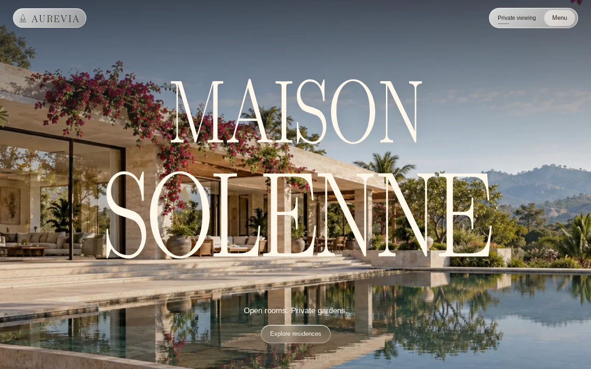

Project study / Independent website concept
Maison
Solenne.
An architectural story.
A practical route to explore.
Maison Solenne is a fictional residential development under the AUREVIA brand. I created this independent website concept to connect the impression of a place with browsing homes, comparing choices and a viewing-form preview.

01 / Context and contribution
Beyond the
first impression.
A property website needs to communicate the feeling of a place while helping someone understand practical options. The question behind this project was how to connect those two parts of the experience.
My contribution covered concept direction, planning and AI-assisted website development. The site uses native HTML, CSS and JavaScript, with local imagery and fonts. Generated architectural imagery and creative references are disclosed in the project.
02 / Design decisions
Let the story lead
into a choice.
- Set the scene
- Use architectural storytelling and day/night presentation to introduce the fictional development before moving into its residence options.
- Make options explorable
- Provide residence filters, sorting and quick views so a visitor can move from a broad collection to details that matter to them.
- Support comparison
- Allow a comparison of up to three residences. The intention is to make differences easier to inspect without relying on memory across separate views.
- Connect to the next step
- Carry a selected residence into the sample viewing journey. The form is a local preview and does not send, save or book an enquiry.
03 / What you can inspect
A working concept,
with a defined scope.
The published concept includes 18 fictional residences, detailed residence pages, comparisons, a gallery and a sample viewing journey. The public source documents the structure, credits and demonstration boundaries.
The result is a portfolio demonstration of how a property story can connect to a practical exploration flow. It is not a client commission. Residence data, prices and availability are illustrative; no bookings, sales or conversion results are claimed.
04 / The next validation step
Observe the journey
before claiming a result.
A useful next test is to ask willing participants to find a residence matching a brief, compare their options and identify what the viewing action does. Record the task, sample size and points of confusion.
The observations would inform the next revision of the exploration flow.
05 / A related project
Give your website
a clearer journey.
If your website needs to connect its story with a practical visitor action, share the problem and the current setup.